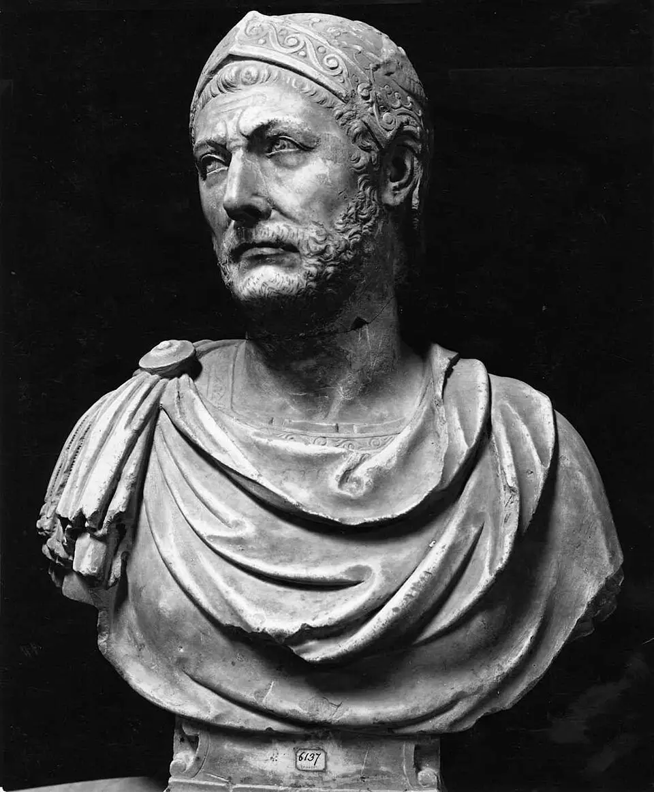
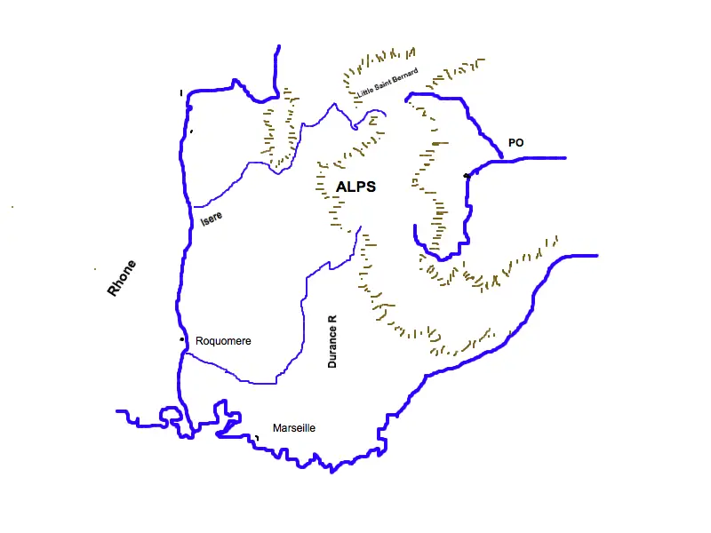
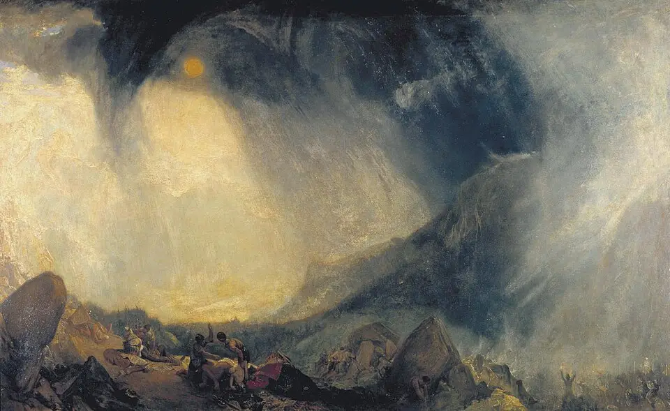
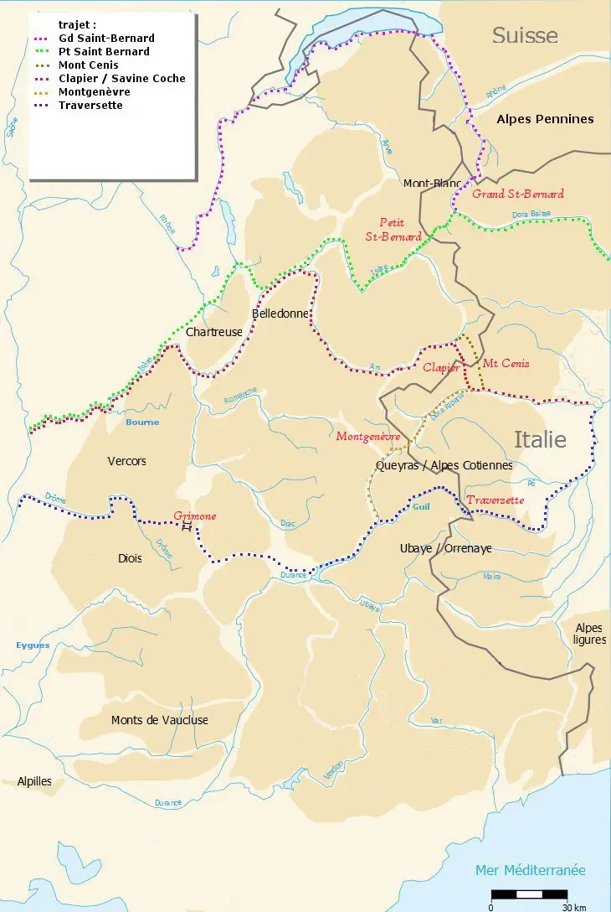

Hannibal đưa voi chiến vượt dãy Alps
Năm 218 TCN, Rome chờ quân Carthage từ biển. Hannibal lại đi bộ qua dãy Alps, mang theo voi chiến.

Mùa xuân năm 218 TCN, Rome tuyên chiến với Carthage. Hải quân La Mã làm chủ Địa Trung Hải, và Viện Nguyên lão đã tính đến chuyện đổ bộ sang châu Phi. Vài tháng sau, vào khoảng tháng 11, một đội quân Carthage xuất hiện ở đồng bằng sông Po, miền bắc nước Ý. Họ không đến bằng thuyền. Họ đã đi bộ từ Tây Ban Nha, băng qua dãy Pyrenees, sông Rhône và dãy Alps.
Ai kể lại chuyến đi?
Có hai nguồn chính. Sử gia Hy Lạp Polybius sinh khoảng 20 năm sau sự kiện, và tự nói rằng ông đã đi lại con đường qua Alps. Sử gia La Mã Livy sinh khoảng 160 năm sau. Không có bằng chứng khảo cổ trực tiếp nào về đội quân. Mọi giả thuyết hiện đại đều dựa vào cách đọc ba địa danh mà Polybius ghi lại, cùng danh sách bộ tộc và địa danh dài hơn của Livy.
Theo Polybius, Hannibal rời sông Ebro với 90.000 bộ binh và 12.000 kỵ binh. Ông để lại một phần quân giữ vùng vừa chinh phục, gửi một phần về nhà, và còn khoảng 50.000 bộ binh, 9.000 kỵ binh khi tiến vào xứ Gaul. Ông mang theo 37 con voi chiến. Thử thách đầu tiên không phải là núi.
Voi qua sông Rhône


Con sông rộng là thử thách đầu tiên. Theo lời kể trong các nguồn cổ, quân Carthage dựng hai cầu tàu dài khoảng 30 m, buộc vào những chiếc bè lớn, rồi phủ đất lên trên để voi tưởng mình vẫn đang đi trên mặt đất. Một số con hoảng sợ làm lật bè. Nhưng nước đủ nông, chúng lội sang bờ bên kia, giơ vòi lên khỏi mặt nước. Tất cả số voi đều qua được sông. Nhưng con sông mới là phần dễ.
Năm 1726, Jonathan Swift đã chế giễu nó trong Gulliver du ký, khi để Gulliver gọi hồn Hannibal và nghe ông nói chưa từng dùng lửa và giấm.
Mười lăm ngày trên núi


Quân đội vượt Alps vào cuối thu, khoảng cuối tháng 10, khi tuyết đã rơi. Các bộ tộc miền núi phục kích từ trên cao, lăn đá xuống đoàn quân và giết nhiều súc vật thồ. Ở sườn phía Ý, tuyết tan ban ngày rồi đóng băng ban đêm, dốc lại đứng hơn. Nhiều người trượt chân rơi xuống vực.
Trên đường xuống, đoàn quân gặp một đoạn đường dài khoảng 300 yard bị sạt lở. Quân Numidia mất ba ngày sửa đường để những con voi đói lả đi qua. Polybius kể rằng tại một điểm, Hannibal tập hợp binh lính và chỉ cho họ thấy đồng bằng sông Po bên dưới.
Một chi tiết nổi tiếng khác kể rằng quân lính đốt lửa nung một tảng đá chắn đường, rồi đổ giấm lên cho đá nứt. Chuyện này bị nghi ngờ từ lâu. Năm 1726, Jonathan Swift đã chế giễu nó trong Gulliver du ký, khi để Gulliver gọi hồn Hannibal và nghe ông nói chưa từng dùng lửa và giấm.
Theo các tổng hợp hiện đại, Hannibal xuống đến xứ Gaul bên này Alps sau khoảng 15 ngày trên núi, với khoảng 20.000 bộ binh và 6.000 kỵ binh. Số voi còn sống không rõ. Con đường họ đi qua chính xác là đâu thì đến nay chưa ai chắc.
Đèo nào?


Đây là câu hỏi đã kéo dài hàng thế kỷ. Theodore Dodge chọn đèo Little St Bernard, John Lazenby chọn Col de Clapier. Năm 1974, Gavin de Beer chọn Col de la Traversette, đèo cao nhất và nằm xa về phía nam nhất, khớp với mô tả của Polybius và Varro.
Nhóm của nhà địa chất W. C. Mahaney công bố một bằng chứng lạ. Trong lớp than bùn gần đỉnh Col de la Traversette, họ thấy đất bị xáo trộn mạnh, như bởi hàng nghìn con vật, và có lượng vi khuẩn Clostridia bất thường, loại sống trong phân ngựa. Định tuổi carbon cho kết quả khoảng năm 218 TCN. Không phải ai cũng chấp nhận: năm 2015, M. Kuhle và S. Kuhle đã viết bài phản bác cách đọc Polybius của Mahaney. Dù vượt đèo nào, đoàn quân ấy cũng đã đến được nước Ý.
Sau dãy Alps
Hannibal thắng ở Trebia năm 218 TCN, ở hồ Trasimene năm 217 TCN, rồi ở Cannae năm 216 TCN. Ông ở lại Ý khoảng 15 năm nhưng không chiếm được thành Rome. Năm 207 TCN, em trai ông là Hasdrubal cũng vượt Alps với khoảng 35.000 quân, nhưng bị tiêu diệt ở sông Metaurus. Cuối cùng Hannibal bị gọi về châu Phi và thua Scipio ở Zama năm 202 TCN.
Bức tranh "Bão tuyết: Hannibal vượt Alps" của J. M. W. Turner, vẽ năm 1812, là một trong nhiều tác phẩm lấy cảm hứng từ chuyến đi. Cuộc vượt núi có thật và đã đổi hướng một cuộc chiến, còn con đèo chính xác và nhiều chi tiết đẹp nhất thì vẫn nằm trong vùng tranh cãi.